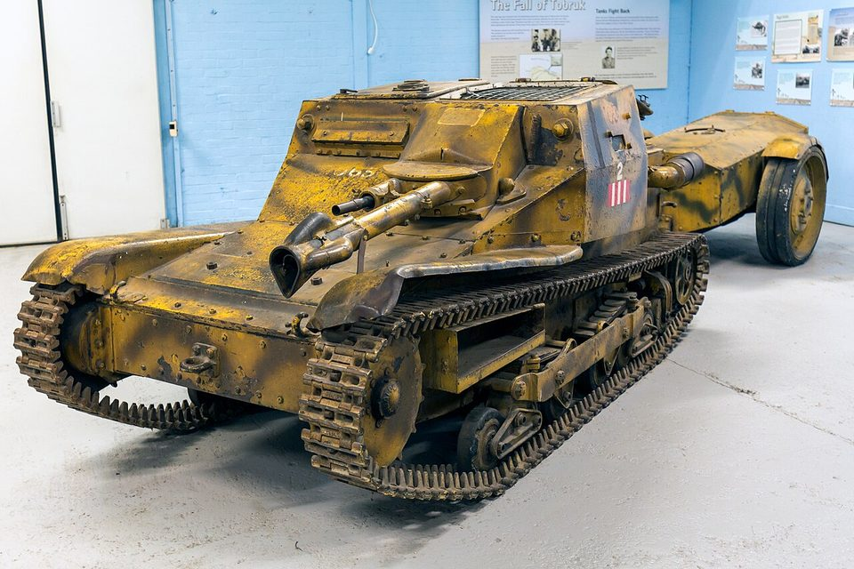
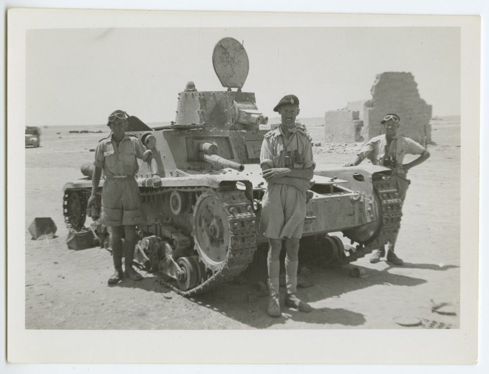

Todos los tanques › Por país › Italia
Tanques de Italia
Italia entró en la guerra con carros ligeros y medios pensados para la montaña, que resultaron insuficientes en el desierto.
Primera Guerra Mundial
1916–1918 · 1 fichaEntreguerras
1919–1939 · 3 fichas-
 Italia · 1921
Italia · 1921Fiat 3000
Carro ligero
-

Italia · 1933Carro Veloce L3/33
Tanqueta
-

Italia · 1939Carro Armato M11/39
Carro medio